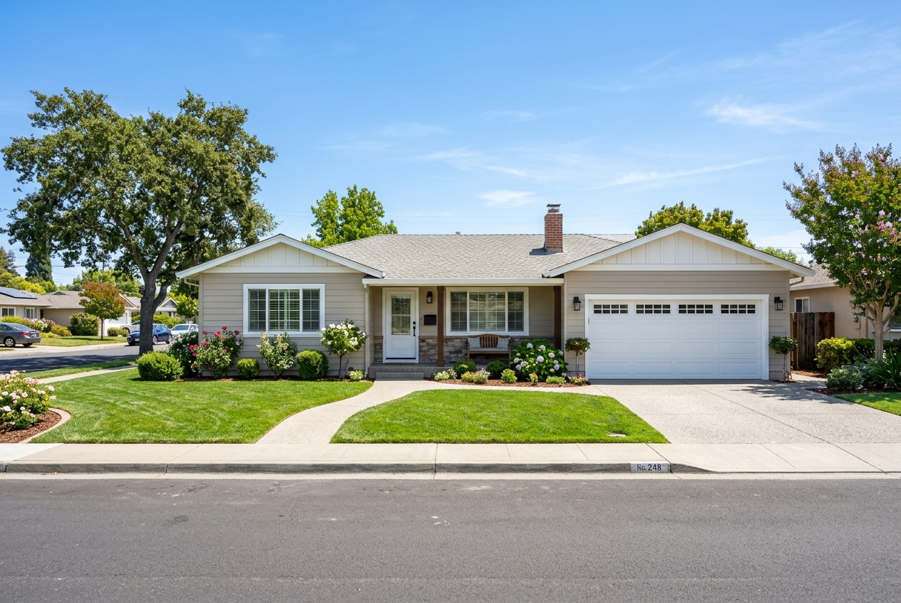

EXPLORE THE NEIGHBORHOODS


Find your corner of Hayward
GUARD GATED · TPC GOLF CLUB
Stonebrae Country Club →
Premier master-planned gated enclave perched above the clouds, featuring modern architectural estates, clubhouse dining, and 5-bridge Bay views.

UNINCORPORATED · ACREAGE
Fairview & Hayward Hills →
Semi-rural foothill pocket with equestrian parcels, custom residences, quiet winding lanes, and sweeping sunset perspectives.
WALK TO BART · URBAN DINING
Downtown & B Street Corridor →
Historic downtown featuring independent dining, community cinema, heritage architecture, and immediate BART access for regional commuters.
COMMUTER CONVENIENCE · VALUE
South Hayward & Mission Blvd →
Established residential avenues offering convenient access to I-880, Highway 92, and the South Bay technology corridor.